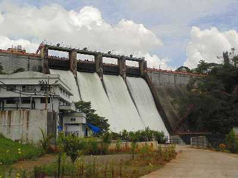

Athirapally Falls

Located 60 km from the Thrissur district of Kerala, Athirapally Falls is a marvellous cascade of frothy waters that makes its way from the Anamudi mountains of the Western Ghats. Also called as Bahubali Waterfall, this 80 ft high and 330 ft wide marvel is the largest waterfall in Kerala. It is often referred to as the "Niagara Falls of India". From here, the Athirapally falls flows through the verdant greenery of Vazhachal Forest toward the Arabian Sea, creating a spectacular vista of scintillating water, emerald jungles and azure sky.
When you land in Athirapally, you are greeted with the sight of charming green Sholayar Peaks peering over the rushing gush of the falls. Standing against the backdrop of a rustling jungle foliage, this many films and music videos are shot here. Bird lovers cannot miss this place, for it is the only place in the Western Ghats where four endangered Hornbill species are seen. There is a pool above the falls where you can relax and unwind. To get a view of the waterfall, one needs to get down from the mountain for about 100 meters.
Another interesting fact to note is that the fall joins forces with the Chalakkudy river before reaching its final destination into the sea. There are a couple of water theme parks on the way to Athirappilly called Silver Storm and Dream World and many resorts as well.
Readmore
Vazhachal Falls

There are tree shades and sitting arrangement built around is a good place to relax with friends and family. The rocky falls are really a must visit spot.
Vazhachal Falls is a popular picnic spot. Quality time can be spent here with the family. The place is located at a distance of 60 km from Thrissur city and 5 km from Athirapilly Falls. Vazhachal Falls have dense forests of Sholayar ranges surrounding. During its course on rocky terrain, River Chalakkudy gives out in three branches, which resume its flow surrounding the small islands formed by the riparian forests. These three branches gather momentum on its downward course and plummet to the rocky bed of River Chalakkudy to re-unite.
Readmore
Peechi Dam

Peechi Dam lies at a distance of 23 km from Thrissur. The dam is the main irrigation project of this town of Kerala. It is a very famous attraction, and visitors come here now and then for the fantastic picnic spot it serves as and for the boating facilities which are offered at this reservoir. One can also come across Peechi-Vazhani Wildlife Sanctuary here which is a must-visit place for the nature-lovers. The dam is constructed across the Manali River.
Readmore